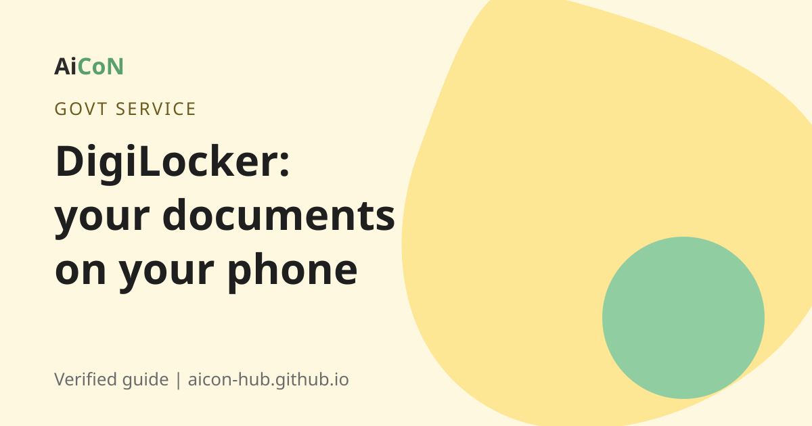

DigiLocker: keep your certificates and ID on your phone
DigiLocker is a free government app and website that holds your official documents, like your driving licence and marksheets. The documents come straight from the office that issued them, so they are trusted.

What is DigiLocker?
DigiLocker is an initiative of the Ministry of Electronics and IT (MeitY) under Digital India. Its goal is paperless governance. The website is digilocker.gov.in. There is also a mobile app.
The key idea: documents in DigiLocker are issued by the original issuer, for example a board, a transport office or a university. You do not upload a scan. The issuer puts the document in your account.
How big is it?
A PIB release says DigiLocker has over 71.66 crore registered users and more than 936.03 crore documents issued by 2,822 onboarded issuers. Another PIB release says 5,437 document types and services were available on DigiLocker as on 31 July 2026.
Which documents can you get?
- Driving licence and vehicle registration (RC).
- School and college marksheets and certificates.
- Insurance policies and other issuer documents.
- Aadhaar and PAN, where available through the issuer.
Which documents appear depends on whether the issuer has joined DigiLocker. You can also upload your own scanned copies for storage. Those uploads are not issued documents.
Are digital copies accepted?
A circular from the Ministry of Road Transport and Highways, hosted on the DigiLocker site, deals with exactly this problem. It says citizens complained that documents in DigiLocker or the mParivahan app were not accepted by traffic police. A PFRDA circular also states that issued documents in DigiLocker are treated at par with original physical documents. For driving licence and RC, you can show them on DigiLocker or mParivahan at a traffic check.
Other offices may still ask for paper. If someone refuses, show the official circular or ask for the rule in writing.
How to start, step by step
- Install DigiLocker from Google Play or the App Store, or open digilocker.gov.in.
- Choose sign up. Enter your mobile number and the OTP.
- Enter your Aadhaar details if asked. This links your account to your identity.
- Set a security PIN.
- Go to Issued Documents or search for the document type, such as "Driving Licence".
- Enter your document number and fetch it. It is added to your account.
- To share, use the share option to send a link, so you do not have to send a photo.
Cost, eligibility and limits
| Price | Free. |
|---|---|
| Who can use it | Any person in India with a mobile number. Aadhaar makes it easier. |
| Languages | The site offers English, Hindi and many Indian languages including Malayalam. |
| Limits | Only issuers who have joined can add documents. Some offices may still ask for paper. |
Stay safe
- Use only the official app or digilocker.gov.in.
- Never share your security PIN or OTP.
- Share documents by link from the app and keep control of who sees them.
Frequently asked questions
Is DigiLocker free?
Yes.
Do I need Aadhaar to sign up?
Aadhaar makes sign up and verification easy. Check the app for the current options.
Is a DigiLocker document legally valid?
Issued documents are treated at par with originals, according to official circulars. Some offices may still ask for paper.
Can I keep my own scanned papers there?
Yes. You can upload them, but uploads are not issued documents.
Can I use it in Kerala offices?
Yes. DigiLocker works across India. Accepting offices depend on the issuer.
Sources: DigiLocker, DigiLocker FAQ, MoRTH circular on DigiLocker and mParivahan, PIB release on DigiLocker users, PIB release (31 July 2026). Checked 6 October 2026.